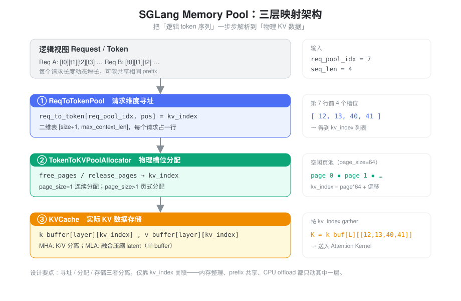
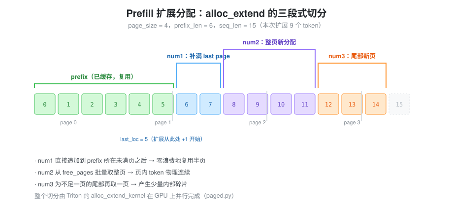
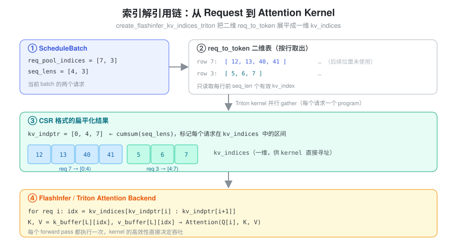
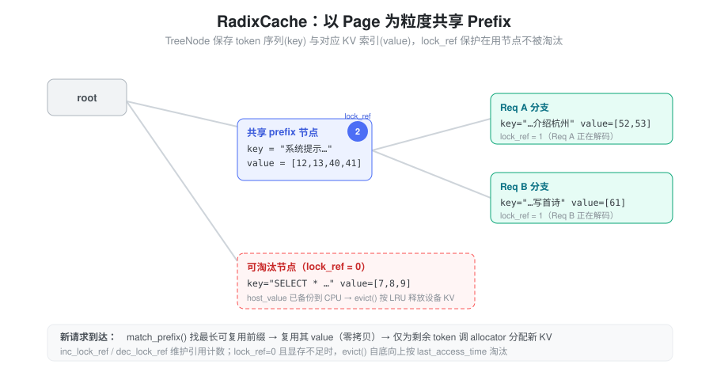

Transformer 模型在推理时，每生成一个新 token，都需要访问之前所有 token 的 Key 和 Value（KV Cache）。这带来三个核心挑战：
- 动态长度：不同请求的序列长度不同，且每个请求的长度都在持续增长
- 内存碎片：频繁的分配和释放会产生内存碎片，降低内存利用率
- 共享需求：多个请求可能有相同的 prefix，共享 KV Cache 可以节省计算和内存
传统的连续内存分配方式难以同时解决这三个问题。这引出了 Page 机制 的设计思想。
核心抽象：三层映射关系
SGLang 的 Memory Pool 本质上建立了一个三层映射架构，让逻辑上的 token 序列能够找到物理上的 KV 数据：

这三层在初始化时一起创建、彼此通过索引关联，各自解决一个维度的问题：
- ReqToTokenPool 解决「请求维度」的寻址问题：给定请求和 token 位置，找到 KV 槽位索引
- TokenToKVPoolAllocator 解决「物理内存」的分配问题：管理 KV 槽位（或页）的分配与释放
- KVCache 解决「数据存储」的实际问题：真正存放每一层的 K/V 张量
三者分离、各司其职，仅靠 kv_index
这一个整数相互关联。这个「薄索引」正是后面所有灵活性（内存整理、prefix
共享、CPU offload）的来源。
req_to_token 与 token_to_kv 的深层关联
ReqToTokenPool：请求维度的二维表
ReqToTokenPool（memory_pool.py:256）的核心就是一张二维表加一个空闲链表：
## 一行对应一个请求槽位，一列对应一个 token 位置
self.req_to_token = torch.zeros(
(size + 1, max_context_len), dtype=torch.int32, device=device
)
## 注意是 range(1, size+1)：index 0 被刻意保留
self.free_slots = list(range(1, self._alloc_size))
self.req_generation = torch.zeros(self._alloc_size, dtype=torch.int64)这里有几个容易忽略但很关键的工程细节：
- padding row at index 0：第 0
行是预留的「哑行」。CUDA Graph 捕获的 padded batch
会把多余的
req_pool_indices默认填 0，这些 dummy 读写就落在第 0 行，不会破坏真实数据。分配器里的 page 0 同理也被保留。 - 从尾部弹出空闲槽位：
alloc时用free_slots[-need_size:]从尾部取，复杂度O(need_size)，比从头部弹出的O(len(free_slots))更快。 - 复用槽位：chunked prefill 跨 chunk
的请求
req_pool_idx已经存在，会直接复用原来的行，而不重新分配。 req_generation：每次槽位被重新分配时自增，用于区分「同一个物理行」被不同请求先后占用的代际，避免陈旧引用。
数据结构对比
| 特性 | req_to_token | token_to_kv（由 Allocator 管理） |
|---|---|---|
| 维度 | [size+1, max_context_len] 二维 int32 |
一维页/槽位索引池 |
| 含义 | 每个请求每个位置的 KV 槽位 | 物理 KV Cache 槽位 |
| 分配单位 | 按「请求」分配一行 | 按 Page 分配槽位 |
| 生命周期 | 与请求绑定 | 与 KV 数据绑定 |
索引流转过程
当 Attention 算子需要访问 KV Cache 时，发生了一次索引解引用链：
步骤 1: 获取请求的 pool index
req_pool_idx = request.req_pool_idx
步骤 2: 找到该请求所有 token 的 KV 索引
kv_indices = req_to_token[req_pool_idx, :seq_len]
步骤 3: 通过 KV 索引访问实际数据
K = kv_cache.k_buffer[layer_id][kv_indices]
V = kv_cache.v_buffer[layer_id][kv_indices]这个设计的关键洞察是：分离「寻址」和「存储」。
req_to_token负责「寻址」：知道数据在哪里kv_cache负责「存储」：知道数据是什么allocator负责「管理」：知道哪里有空位
为什么需要两层索引？
一个直观的疑问是：为什么不直接让
req_to_token 指向物理地址？
答案在于灵活性：
- 内存重分配：当需要整理内存碎片时，只需修改
kv_cache的物理布局，无需遍历所有请求更新req_to_token - Prefix 共享：多个请求的
req_to_token可以指向相同的kv_cache_index，实现零拷贝共享 - CPU Offload：当 KV Cache
需要换入换出时，
req_to_token保持不变，只移动kv_cache的数据
分配器内部：空闲页是怎么管理的
BaseTokenToKVPoolAllocator（allocator/base.py）用两个张量管理空闲资源，这个设计比「一个空闲链表」要讲究：
self.free_pages = None # 当前可直接分配的页
self.release_pages = None # 刚释放、尚未并回 free_pages 的页
self.need_sort = need_sort # 是否需要保持页有序
self.free_group = [] # 批量释放缓冲free_pages/release_pages两段式：常规场景释放直接拼回free_pages；而在 PD 分离（Prefill/Decode disaggregation） 等需要有序页的场景（need_sort=True），释放先进release_pages，等到容量不够时才通过merge_and_sort_free()合并排序，把排序开销摊销掉。free_group_begin/end：一个 batch 内多个请求结束时，把 free 操作缓存进free_group，到free_group_end一次性torch.cat释放，减少 kernel launch。- page 0 保留：和
ReqToTokenPool一样，free_pages = arange(1, num_pages+1)，第 0 页留给 padded token 的 dummy 写入。
连续分配器（page_size=1）的
alloc 就是从 free_pages
头部切一段；页式分配器把页号展开成 token 索引：
## PagedTokenToKVPoolAllocator.alloc：取 num_pages 个页，展开成连续 token 索引
out_pages = self.free_pages[:num_pages]
out_indices = (out_pages[:, None] * self.page_size
+ torch.arange(self.page_size, device=self.device)).reshape(-1)释放时则反向：torch.unique(free_index // self.page_size)
把 token 索引折回页号再回收。
内存分配的两个关键路径
路径一：Prefill（Extend）阶段
处理新 prompt 时要为大量 token 一次性分配 KV
Cache。页式分配器的 alloc_extend
把扩展区间巧妙地切成三段，最大化复用、最小化碎片：

## PagedTokenToKVPoolAllocator.alloc_extend(...)
## 调用 Triton kernel 在 GPU 上并行完成三段切分
alloc_extend_kernel[(bs,)](
prefix_lens, # 已缓存的 prefix 长度（prefix 停在某个未满页中间）
seq_lens, # 扩展后的总长度
last_loc, # prefix 最后一个 token 的物理位置
self.free_pages,
out_indices,
next_power_of_2(bs),
self.page_size,
)三段的含义（对应 alloc_extend_naive
的参考实现）：
- num1 — 补满 last page：prefix
往往停在一个未满的页中间，先把这个半页的剩余槽位追加使用（紧跟
last_loc + 1），零浪费地复用半页。 - num2 — 整页新分配：中间部分从
free_pages批量取整页，保证页内 token 物理连续。 - num3 — 尾部新页：末尾不足一页的部分再取一页，产生少量可接受的内部碎片。
路径二：Decode 阶段
每步只生成一个新
token，追求「最小化分配」。alloc_decode 同样用
Triton
kernel：当前页未满就复用，满了就取一页新页，每个请求只返回一个
kv_index，然后写回
req_to_token[req_pool_idx, seq_len]。
Attention 算子与元数据的结合
Attention 需要哪些元数据？
Attention 算子执行时，需要回答以下问题：
Q1: Query 来自哪些位置？ → qo_indptr
Q2: Key/Value 来自哪些位置？ → kv_indptr, kv_indices
Q3: 每个请求有多少 KV？ → seq_lens
Q4: 最后一个 Page 有多少有效？ → kv_last_page_len这些答案都要从 Memory Pool
的数据结构中推导。核心的转换是把二维的
req_to_token 展平成一维的
kv_indices：

关键转换：create_flashinfer_kv_indices_triton
这个 Triton
kernel（kernels/ops/kvcache/kv_indices.py）是连接
Memory Pool 和 Attention Backend 的桥梁。它为 batch
里每个请求启动一个 program，各自把自己那一行的有效索引搬到
kv_indices 的对应区间：
@triton.jit
def create_flashinfer_kv_indices_triton(
req_to_token_ptr, # [max_batch, max_context_len]
req_pool_indices_ptr, # 本 batch 各请求的 pool index
page_kernel_lens_ptr, # 各请求的序列长度
kv_indptr, # CSR 指针数组 = cumsum(seq_lens)
kv_start_idx,
kv_indices_ptr, # 输出：展平后的一维 KV 索引
req_to_token_ptr_stride: tl.constexpr,
):
pid = tl.program_id(axis=0) # 每个请求一个 program
req_pool_index = tl.load(req_pool_indices_ptr + pid)
kv_indices_offset = tl.load(kv_indptr + pid) # 该请求在输出中的起点
## 分块把 req_to_token[req_pool_index, kv_start:kv_end] 搬到 kv_indices调用方（triton_backend.py）先用一行
kv_indptr[1:] = torch.cumsum(seq_lens, dim=0)
建好 CSR 指针，再启动 kernel 填充索引。这个 kernel
在每个 forward pass
都会执行，所以它的高效性至关重要。
对于 MLA 的页式后端，还有一个姊妹 kernel
create_flashmla_kv_indices_triton，它以 page 粒度生成 block table，并支持 unified-memory 下的虚拟页→物理页映射（v2p）。
代码实现的关键节点
核心类关系
Memory Pool 由三组类协作，分别对应三层映射：
ReqToTokenPool（memory_pool.py:256）
└─ HybridReqToTokenPool 混合（Mamba + Attention）模型
BaseTokenToKVPoolAllocator（allocator/base.py） 抽象基类
├─ TokenToKVPoolAllocator page_size=1，连续分配（allocator/token.py）
├─ PagedTokenToKVPoolAllocator page_size>1，页式分配（allocator/paged.py）
└─ SWATokenToKVPoolAllocator 滑动窗口注意力（allocator/swa.py）
└─ PureSWATokenToKVPoolAllocator
KVCache（memory_pool.py:1624） 抽象基类
├─ MHATokenToKVPool 标准多头注意力，K/V 分离
│ ├─ MHATokenToKVPoolFP4 / MXFP8 低精度量化变体
│ ├─ PageMajorMHATokenToKVPool page-major 内存布局
│ └─ NoOpMHATokenToKVPool 占位（如纯 linear 层）
└─ MLATokenToKVPool DeepSeek MLA，融合压缩 latent
└─ MLATokenToKVPoolFP4相比早期版本，
allocator已从单文件拆成独立 package，且 KVCache 家族新增了多种量化/布局变体；所有变体都隐藏在get_key_buffer/get_value_buffer/set_kv_buffer等统一接口之后。
KVCache 基类：被抽象掉的细节
KVCache
抽象基类（memory_pool.py:1624）封装了几个对上层透明、但对正确性/性能很关键的点：
store_dtype：FP8（float8_e4m3fn等）会以torch.uint8存储，因为index_put对 FP8 尚未实现——取出时再view回原 dtype。start_layer/end_layer：流水线并行（PP）下，每个 rank 只持有自己负责的层区间。layer_transfer_counter：layer-wise KV 加载时，get_key_buffer会wait_until(layer_id)等待该层数据就绪，从而让 KV 传输与计算 overlap。- padded slot 0：所有 buffer
的实际大小都是
size + page_size，首个槽位留给 padded token。
MHA vs MLA：同一套索引，不同的存储形态
MHATokenToKVPool: k_buffer[layer], v_buffer[layer] ← 标准 KV 分离
MLATokenToKVPool: kv_buffer[layer]（单个融合 buffer） ← 压缩的 latentMLA 把 KV 压缩成一个低维
latent，所以只有一个
kv_buffer，其最后一维为
kv_lora_rank + qk_rope_head_dim：
## MLATokenToKVPool._create_buffers
self.kv_buffer = [
torch.zeros((size + page_size, 1, self.kv_cache_dim), # kv_cache_dim = kv_lora_rank + qk_rope_head_dim
dtype=self.store_dtype, device=self.device)
for _ in range(self.layer_num)
]这正是「抽象带来可扩展性」的体现：无论 K/V
分离还是融合，上层只通过
get_kv_buffer(layer_id)
取数据，不关心底层形态。
Prefix Cache：Radix Tree 的角色
RadixCache（radix_cache.py:303）位于
Memory Pool 之上，用一棵基数树实现 Prefix
共享。每个 TreeNode 保存一段 token
序列及其对应的 KV 索引：

TreeNode（radix_cache.py:238）的关键字段：
key: RadixKey：该节点代表的 token 序列；extra_key可区分 LoRA / 采样盐 / 缓存版本等不同命名空间，避免误共享。value：这些 token 的 KV 索引（设备上的一维 int64 张量）；value is None表示节点已被淘汰。children：token_id → TreeNode的字典。lock_ref：引用计数，正在被请求使用的节点lock_ref > 0，受保护不被淘汰。host_value：CPU 侧备份，支撑 KV 的 host offload。last_access_time/priority：驱动 LRU 及优先级淘汰策略。
核心操作：
match_prefix(key)：找最长可复用前缀，必要时分裂节点以暴露精确边界；返回拼接好的 KV 索引insert(key, value)：插入新的 prefix 节点cache_finished_req/cache_unfinished_req：请求（部分）完成时把 KV 回写进树inc_lock_ref/dec_lock_ref：维护引用计数evict：显存不足时自底向上按访问时间淘汰lock_ref=0的节点
当新请求到达时：
1. match_prefix(request_tokens) → 找到可复用的 prefix
2. 复用 prefix 对应的 kv_cache_indices → 无需重新计算这些 token 的 KV
3. 只为剩余的 tokens 调 allocator 分配新的 KV Cache这就是 Memory Pool 设计中「共享需求」的具体落地。
总结：架构的核心价值
回顾整个 Memory Pool 架构，其核心价值体现在三个方面：
解耦带来的灵活性
三层映射关系将「逻辑请求」「索引管理」「物理存储」解耦：
- 调整分配策略（连续 vs 页式）不影响存储层
- 实现共享（Radix Cache）不需要修改底层存储
- 支持 Offload
只需扩展存储层的操作（
host_value+layer_transfer_counter）
抽象带来的可扩展性
KVCache 的多种实现共享相同的索引机制：
MHATokenToKVPool: k_buffer[layer], v_buffer[layer] ← 标准 KV 分离
MLATokenToKVPool: kv_buffer[layer] ← KV 融合压缩
+ FP4 / MXFP8 / PageMajor 等变体 ← 量化与布局差异这些差异被封装在
get_key_buffer、get_value_buffer
等接口背后，上层代码无需关心。
元数据流的清晰性
从 Request → req_to_token → kv_indices → Attention Kernel，数据流转路径清晰：
Request 级别信息 (req_pool_idx, seq_len)
↓ req_to_token 解引用
Token 级别索引 (kv_cache_index)
↓ create_flashinfer_kv_indices_triton 展平
一维 kv_indices（CSR: kv_indptr 分段）
↓
Attention Kernel 按 index gather K/V每一步的输入输出明确，便于调试和优化。